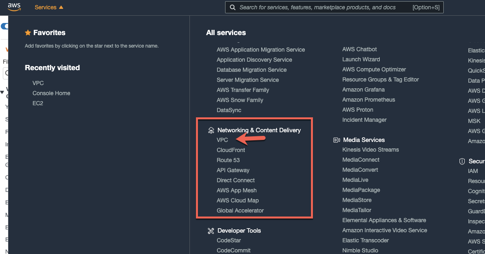

Amazon AWS Transit Gateway は VPC と On premise ネットワークとの間の接続を central hub 形式で実装するための技術です。これにより数多におよぶ 1:1 の接続を行っていた従来の形式から、全体構成の簡略化が可能となります。本機能は cloud router のようなかたちで機能するため、新規接続を行う際はこちらの router へ単一の接続を張るのみとなります。
本 codelab においては MuleSoft Anypoint Platform に追加された CloudHub VPC と貴社契約 AWS における VPC 関連資源との間を Transit Gateways を通じてつなぐ手順を確認します。
まずは、AWS 上で Transit Gateway を作成します。もし Transit Gateway が AWS 上でセットアップ済みであれば Next をクリックの上、次章へ進んでください。
AWS console にログインします。
Networking & Content Delivery セクションへナビゲートの上、VPC をクリックします。

VPC Management Console にてスクロールダウンします。
左側のナビゲーションバーにて Transit Gateways が表れましたらクリックします。
Create Transit Gateway ボタンを押下します。
Name tag 並びに Description 欄に適切な値を入力後、Create Transit Gateway をクリックします。
Transit Gateway が作成されると下記のようなイメージが返されます。
続いて Close ボタンを押下してください。（AWS Console そのものは以降の工程で利用するため開いた状態にしておきます。）
Anypoint Platform へログインします。
Runtime Manager へナビゲートします。
VPC が構成済みで且つ Transit Gateways の entitlement をお持ちの場合は左側のナビゲーションバーに下図のようなかたちで Transit Gateways が表示されます。
Add transit gateway ボタンを押下します。
続いて I'm ready をクリックします。
Name 欄に AWS で設定した Transit Gateway と同じ名前を入力します。
同様に Region 欄も AWS の設定内容と合わせます。
Next ボタンを押下します。
続いて Create Resource Share page リンクを右クリックの上、下図の要領で新規タブでリンク先を開きます。（Anypoint Platform の画面を維持します。ご利用されるブラウザにより右クリック後の表示イメージは異なります。）
Resource Access Manager 画面にて resource share を作成します。
適切な resource share 名を Description 中の Name 欄に入力します。
Resources セクションをスクロールダウンし Transit Gateways を選択します。
続いて Principals セクションまでスクロールダウンします。
同セクションにて MuleSoft の AWS Account ID をコピー＆ペーストの上 Add ボタンを押下します。
画面下までスクロールダウンし、Create resource share ボタンを押下します。
AWS Console は以降の手順で利用するため、開いたままとしておきます。
次章では Anypoint Platform のコンソールを利用します。
Anypoint Platform のコンソールへ戻ります。
Next をクリックします。
AWS Resource share より ID 並びに Owner の値をコピーし、Anypoint Platform 上でペーストします。
続いて Add ボタンを押下します。
接続が完了しますと下図のような Transit Gateway の詳細情報が表示された画面へ遷移します。
続いて CloudHub VPC と Transit Gateway の接続を行います。
Attach VPC をクリックします。
Select VPC ダイヤログ画面にて実行中の Environment に紐づいた VPC がリストされます。
接続対象の VPC を選択の上 Next をクリックします。
次章では Resource Share における手順のと同様に AWS Console へ行き VPC と Transit Gateway との接続を許可します。
Transit Gateway Attachments page リンクを右クリックし、Anypoint Platform のコンソールを開いた状態を維持しつつリンク先を開きます。
AWS Console にて VPC > Transit Gateways 配下の Transit Gateway Attachments セクションへナビゲートします。
表示された画面にて Anypoint Platform にて作成した Attachment を選択します。
State 欄が pending acceptance となっていることを確認します。
Actions ドロップダウンから Accept を選択します。
ポップアップウィンドウにて Accept ボタンを押下します。
Anypoint Platform のコンソールに戻り数分待ってから画面の再読み込みを行います。
下図のようなかたちで Attachment が成功した旨のメッセージが表示されていることを確認します。
本画面においては VPC のルーティング情報も表示されます。
VPC 間のルーティングを行うべく Route の構成をおこないます。
Add Route をクリックします。
Subnet 欄にて AWS VPC の CIDR 範囲を入力の上、Add route ボタンを押下します。
AWS - CloudHub 間の通信を行うべく AWS 上でも同様の設定を行います。
AWS コンソールにおける VPC 設定画面にて Route Tables をクリックの上、対象 VPC に紐づくルートテーブルを選択します。
画面下部の Routes タブにて Edit routes ボタンを押下します。
Add route をクリックの上、CloudHub VPC の CIDR 範囲を入力します。
Target ドロップダウンにて作成した Transit Gateway を選択します。
Save changes ボタンを押下します。
こちらの記事より、Network Tools application(net-tools-v2.3.0.jar)をダウンロードの上、
CloudHub へデプロイします。
記事の内容に従い、CloudHub VPC と AWS VPC の間の接続性の確認を行います。
本ツールの利用にあたり、AWS VPC 上にて EC2 を起動する必要があります。
全て正しく構成されている場合、下図のようなかたちで ping が正しく処理されます。
ご覧いただきましたように Anypoint Platform における Transit Gateway の構成はシンプルです。この新機能により多量の 1:1 関係の接続により複雑化したネットワーク構成の簡略化が可能となります。